- Home
- Qs and As
- Palmovka
- Apartment
- Guest Book
- Contact
| 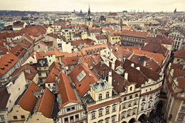 | 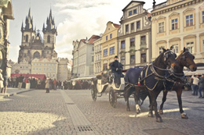 | 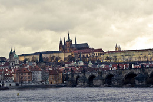 |
As you might already know, this page has been created to help us tell you more about our fabulous place in the heart of Prague, which (for as long as we live in the UK) we let to our mates for short breaks. So without further ado, let us give you the info you’re after. |
 |
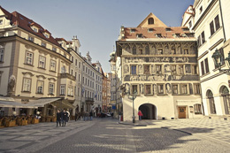 | 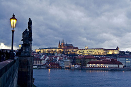 |
|
When to go and how to get there
When should I go? Quite frankly, any time of the year is great. It is a city break you’re after, isn’t it? With the occasional stop in a pub, café, restaurant…? In that case you don’t need to worry too much about monsoons, erupting volcanoes or any other such problems. Just get yourself ready for the continental weather. From experience and talking to people who have been to Prague, we’ve learned that “I went in February and it was So Cold!!” Yes, if you are used to the mild-ish UK weather, you may think it’s cold. We, however look at it this way – there is no such thing as bad weather, only the wrong clothes. So dress well, check with us if unsure what to put in your suitcase and you’ll be just fine. We promise. Every season has something great to offer. The spring is gorgeous, summer nice and hot, autumn spectacular and the winter crisp. Trust us, the Mulled wine from the Christmas markets on the Old Town Square will keep you warm. Just as much as the nice chilled pint of lager guarantees to cool you down in the heat of the continental summer. So when should you go? Any time you fancy. Is the place available? Now there is a good question. Check with us before you book your flight. Otherwise you may find yourself somewhat disappointed, you see… What is it going to cost me? Let me answer this question before you even have a chance to ask. Yes, we will ask you for a bit of cash. If nothing else, having you there costs us and so we ask for small contribution. It’s nothing to worry about, I can promise you that this fancy apartment will work out way cheaper for you then the hostel across the road. How do I get there? The easiest way to get to Prague is by air. From experience we can recommend a couple of airlines that you would have heard of before now. Those are:
In our days of sub zero income we used to travel a lot on coach but the companies who will take you directly from London to Prague are slowly disappearing and we are no longer able to recommend any one of the existing ones. But it’s still worth looking into a bit more if all you have is only a very little cash. We know of the Student Agency and Eurolines going to Prague. |
Things to do before you go
The common sense ones If you are traveling on your UK passport you should just be able to put it in your pocket and go. If however you do not have one of those, it’s best to check with the Czech Embassy in London. Conveniently enough, their website will also tell you the current temperature in Prague. Your little plastic debit card will work just as well over there as it does here in the UK. So you don’t need to worry about getting too much cash before you leave the country. Excellent news, you’ll be saving on commission fees and you don’t need to guess how much you’re likely to spend. Just get the money out of the cash machine as and when you need it. Now this is the best part – this holiday is one of those where you need nothing extra. No more jabs that you’d get at home, no malaria pills, no worries about drinking tap water when you’re over there... It’s all nice, easy and very civilized. It may be worth checking out if your travel insurance is still valid and if you have your free European Health Card. Just in case. Or be very careful with combining too much mulled wine when it’s icy out there. You would not want to fall over and hurt yourself, would you? Having said that, the healthcare in Czech Republic is excellent so you’d have nothing to worry about if you did. For more information check out the Practical information page on Czech tourism website. Your own research Of course we will tell you how great the place is. And it’s not because we want to trick you into anything. We genuinely love Prague and the Czech Republic so all we tell you is what we really think and feel – the place is simply great and quite frankly, we don’t really understand why you haven’t been there already. So that is us. But there are different views and observations so we recommend that you also check some of these websites and forums:
It might be worth at least picking up a city map from the Czech Tourism Centre and if you have a few quid to spare, you’ll be even better off getting your own Lonely Planet guide or equivalent. You’ll have all the info you could ever need, all the maps and a few useful phrases. While you’re at it, you can also check out the messages that other guests left in the Visitors’ Book. We typed them up for you over Christmas 2008 and put on this site under the 'Guest Book' tab. And now you’re ready to get going… |
Getting around Prague
Getting into town from the airport & getting around the town. It could not be easier. First, before you even leave the airport, get yourself a 3 day or 5 day ticket, depending on how long you plan to stay. Then hop on bus No119, validate your ticket (in simple English - stick it in the little machine on the bus, it will print the start date and time for you on your ticket) and let it take you to the last bus stop ‘Dejvicka’, which is also the first stop on the tube. I can tell you with all honesty, the public transport could not be easier. There are only 3 tube lines - you cannot get lost! On top of that buses arrive on time, the tube is more spacious, and the trams are fun.
Unless you’re arriving at the airport in the middle of the night, you should not need a taxi at all during your stay. This is another great money saving news for you. Getting to the flat This is also super-easy. The flat is in a fancy apartment block which is around the corner from the tube station Palmovka. From the flat to the tube platform it will take you about 3 minutes. |
Being out and how to enjoy the Real Czech Pub experience
Food and drink This may happen to you too: every time we go, we have a long list of Czech delicatessen to work our way through. It’s not easy but it is possible. You just need to focus and stay away from the touristy places that will try to re-create your usual English diet. How to order your food a drink When it comes to dining and wining (or drinking beer, which is just so much more likely) we recommend that you have your phrase book handy so that you know what it is you’re ordering & that you try a few little words, at least your ‘please’ and ‘thank you’. We can pretty much guarantee that the service will go up a notch or two. Throughout history the Czechs always had to speak more than just their own language. Recently those have been mainly German and Russian, and so they will appreciate when you, an English speaker make a little bit of an effort. A few bits about pub etiquette We will tell you about the traditional places, ok. Not the fancy, set up for tourist ones. We don’t go to those – ever. |
Prague - what is it all about?
One of the most romantic cities in Europe, Prague is culturally diverse & vibrant; historical city that offers a lot to all visitors. The origin of Prague Prague today Are you arriving to Prague from London? Well then you will be surprised how peaceful and quiet the city is (unless, of course you bump into a hen or stag do which flew in on the same plane). You can slow down a bit but it doesn’t mean that you should forget to pay attention to what’s going on around you. Since I mentioned 'peaceful and quiet' - please try to keep those two words in mind when you're arriving at the flat late at night, having spent the day out, enjoying yourself. You're on holiday, we know. But the chance is that most of the people around you aren't and are in fact getting up very early to go to work. |
What is there to do and see?
You can start with the most obvious activity - city walks and sightseeing. Especially if this is your first time in the Czech Republic, this is where you need to start. Please note that it's worth your time to chek out opening times online, before you actually go to see something. There is small chance that not everything will be open just when you need it. We have been told that the mini Eiffel Tower and the Mirror Maze on top of Petrin Hill have restricted opening hours in winter. Try the Prague Inforamtion Service site for more up to date info. Don't get hungry High brow culture Museums River cruise Movie buff? Sights outside of the city Sports fan? Running Skiing Rock climbing Hiking, trekking and mountain biking Camping I like these suggestions. But where exactly do I go? |
| 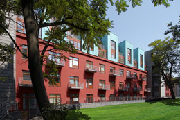 | 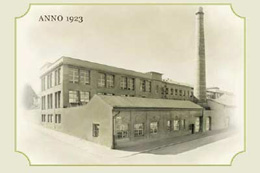 | 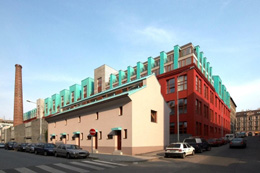 |
The building and its location This three-storey former brick factory dates from the 19th century. The original structure has been preserved and is unique: its high ceilings, big windows, impressive arches and wooden beams go so well together, creating a genuinely unique environment. The building is within 2 minutes walking distance from the nearest tube, Palmovka, which in turn is within a few stops on the tube from many historic sites and places of interest that you may like to visit while in Prague. Even though the building is close to the local amenities, it is set back from the main road & our apartment faces a private courtyard, guaranteeing a peaceful night in. The district Palmovka has a riverside park with a beautiful chateau which is only 10 minutes walk. Here you can find a quiet space to enjoy, away from the vibrant city centre. The area also offers a great range of pubs, bars and restaurants, much cheaper than those in the city centre. You can find the perfect breakfast in the local bakery & in the evenings try traditional Czech food or opt for pizza if you feel less adventurous. And of course, there's always the option to cook in the apartment as there are many shops and some larger supermarkets near the tube station. The recently built 'O2 Arena' (previously known as Sazka Arena) is only 15 minutes walk and it is the location of many interesting events. |
| 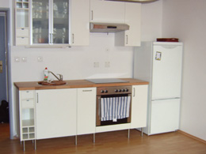 | 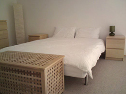 | 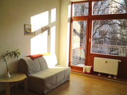 |
This is a one bed mezzanine apartment with its own bathroom, kitchen and balcony. On the ground floor you will find bathroom & WC; and a large room with kitchen, dining and sitting area. Upstairs is a contemporary bedroom with a king size bed and plenty of storage. The apartment is ideal for a couple. We offer it to our friends & their friends for nominal cost, negotiated based on the length of your stay. In return we expect our guests to treat the apartment as our home & observe the following:
This is very important to us as we'd like be able to enjoy our time in the flat when we return to Palmovka. We hope that you'll enjoy your stay & have a great time in Prague (just like we do). |
| 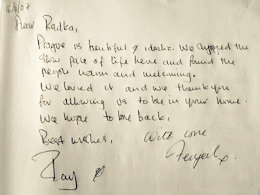 | 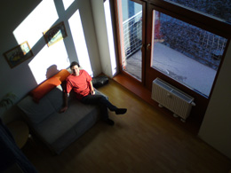 |  |
2006 May 2006 2006 2006 Dec 2006 Apr 2007 May 2007 May 2007 March 2008 |
| 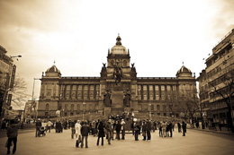 | 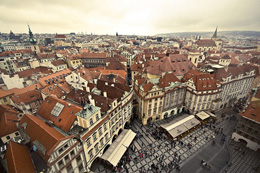 | 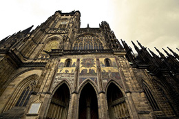 |
You can contact us via e-mail: radka.bailey@gmail.com Just allow a bit of time for an answer - if we are sunning ourselves in Thailand or doing anything else that is so much more exciting than the usual 9-5 (oh I wish!) we may not be able to get to our e-mail for a few days, a week at the most. |